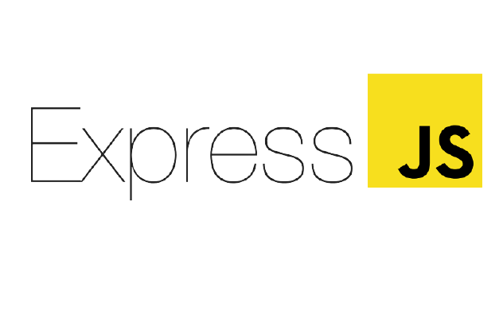

Javascript
Javascript script is used for making responsive frontend website. I also learned it for basic frontend but its also very good for back-end too. So, I have worked on Reactjs and now learning backend frameworks like Express and node.
Have learned the bare-minimum to get started with recat and node

Express
Express Js combined with node js is a framework which handles backend i.e server-side request. I'm learning it to create API. It can also be used for server-side rendering but according to me the best way to use it is - Express + Node handle for API and ReactJs or Vanilla js (sometime) for frontend.
Still learning the basics

Python
Python which is the one of the most popular and easy to learn language and is the first choice most of time choice for most beginers. Just like others I mentioned, It was my first proggramming language and language that I have explored most.
Learned enough to explore most of the frameworks. Right now I have kept it at hold

NodeJs
Node js is a powerful tool for backend of website.I am still in the the process of learning it and its quite fun to do some backend stuff with javascript.
Still learning the basics

ReactJs
It was the first frontend framework that I worked on. It makes frontend preety easy 'cause of its JSX. You have no need to seperate html from javascript which gives more freedom to work.
Still learning the basics. Can make some basics apps. Learning some not very common Hooks
Django
The first server-side rendering framework that I worked on.This was the framework made me realize the use of javascript as it use jinja templates which were not very flexible when it comes to frontend uses. It also reload the page evert time you do something.
Used it for quite a while before swithing to Javascript.
Information
Click the above Images of languages/framework to know more about them.
Caution
This website is not mobile responsive